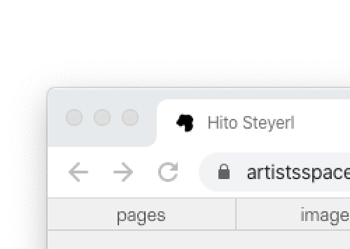

As a developer, I work with people to build websites.
|
artistsspace.org
Website and digital archive for an art institution in New York |
Development with Mark F. Beasley (Development Advising) and Laurel Schwulst (Design) |
Nov 2019 |
|
bentoism.org Workshop-in-a-website for a book |
Development with Laurel Schwulst (Design & Content) |
Oct 2019 |
|
cachesuite.com Website for artist Aaron Noah Graham |
Design & Development | Sep 2019 |
|
saracwynar.com Website for artist Sara Cwynar |
Development with Laurel Schwulst (Design) |
Aug 2019 |
|
2727.today Website for an artist-residency in California |
Design & Development with Laurel Schwulst (Design & Development) and Mindy Seu (Advising) |
May 2019 |
| tamarashopsin.com/soundgame Video guessing game |
Development with Laurel Schwulst (Design & Development) and Tamara Shopsin (Content & Design) |
Jan 2019 |
Sometimes, I make websites, objects, and other loose threads that are still searching for more connections...
